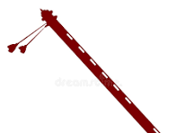
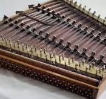
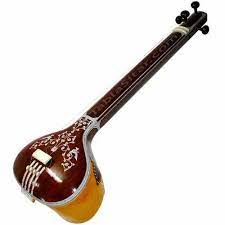

Bansuri
A bamboo flute associated with Lord Krishna.

Santoor
A trapezoid-shaped string instrument played with mallets.

Shehnai
A double-reed wind instrument used in classical music.

Tanpura
A long-necked plucked string instrument for drone sounds.